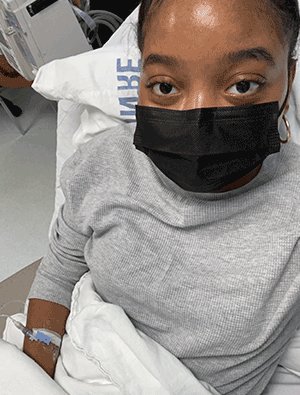

My Scleroderma Story
I was officially diagnosed with Scleroderma on May 4th, 2021 (happy Star Wars Day to me ☹), but in the months prior, my symptoms that manifested were typical of many scleroderma patients.
I first suspected something was wrong in December of 2020: After I got back from a freezing day hanging out in my hometown of New York City, I noticed a couple of my fingertips were blue with a stinging sensation. Never having seen this before, I expressed concern to my family, but was nonchalantly brushed off, a few of them insisting it was just a bruise.

Days turned into weeks and the number blue fingers I had steadily increased until they all were. Online searches for “blue fingers” and “why are my fingers blue?” lead me to two possibilities: I either had something called “Raynaud’s Syndrome” or I had frostbite.
A prompt trip to urgent care came with the verdict that I had Raynaud’s Phenomenon: a disease that causes areas of the body — such as fingers and toes — to feel numb and cold in response to cold temperatures or stress. In Raynaud's disease, smaller arteries that supply blood to your skin become narrow, limiting blood flow. In response, I was told to seek a rheumatologist: a doctor trained in the diagnosis and treatment of diseases that affect muscles, bones, joints, ligaments, and tendons.
After the Raynaud’s showed up in my fingers, I began to experience other complications. The lack of blood flow created ulcers on my fingertips, my muscles and skin tightened, my joints became painful and swollen, and I began to suffer from gastrointestinal issues. I couldn’t stretch my arms above my head, my elbows stuck bent, and I couldn’t sit or get up from the ground without difficulty.
It had become extremely clear that I had scleroderma: my immune system began to attack my body’s cells, unable to tell the difference between foreign and healthy ones. My rheumatologist told me I would have to be on medication for the rest of my life to manage my disease.
I remember sitting atop the hospital bed, tears welling in my eyes as she and another rheumatologist expressed how sorry they were for me because I was so young.
Thus followed the development of a very close relationship with a team of pediatric rheumatologists, triweekly appointments and the introduction to several immunosuppressant medications in my daily and nightly routines.
After treatment for just over a year, trial and error of several medications, and physical therapy, I can live more comfortably now. My life isn’t the same as it was by any means, but I have hope for life with it, and so can anyone with scleroderma!